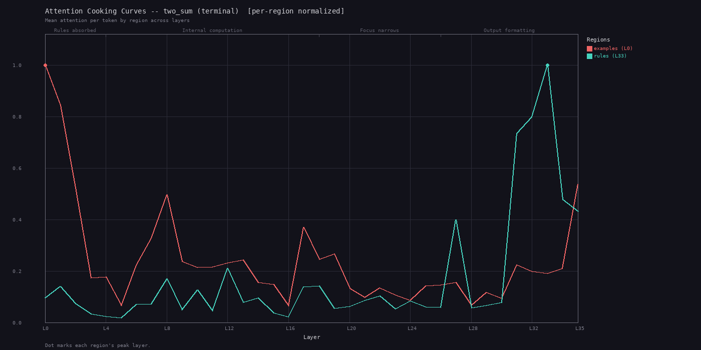
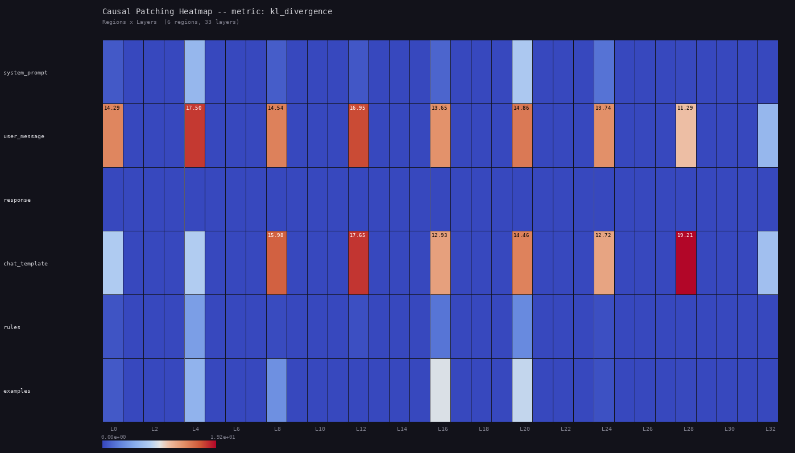
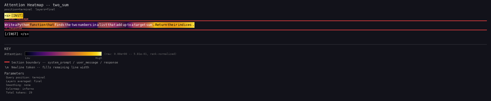
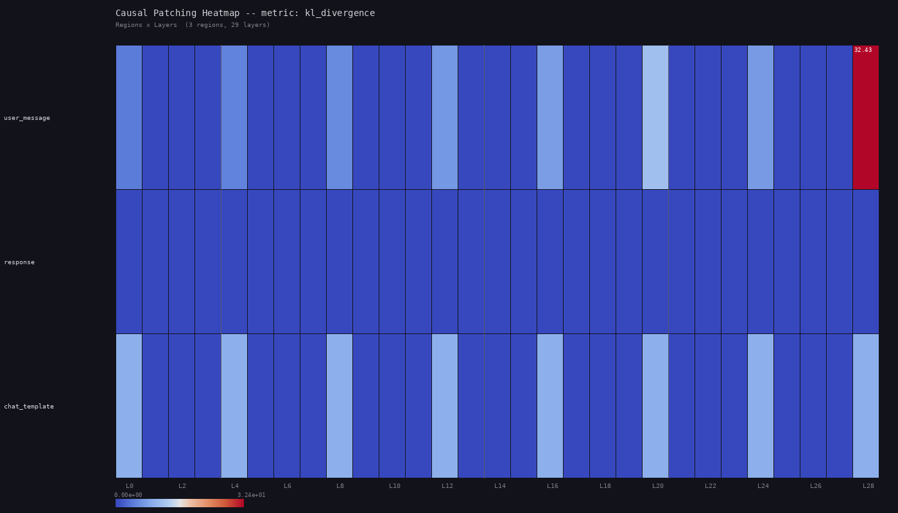

Example output
Real analysis results generated on AMD Instinct MI350X GPUs.
Qwen2.5-3B-Instruct
36 layers, 16 heads — Prompt: coding assistant with rules + examples regions

Per-token attention heatmap
Terminal-layer attention distribution across all 289 tokens. Brighter = more attention. ChatML tokens masked.

Cooking curves
Per-region attention trajectories across 36 layers. Rules peak late (L33), examples peak early (L0) with 3.5x decay.

Activation patching grid
Region x layer causal importance via zero-ablation. Warmer colors = higher KL divergence when region is removed.

Per-head attention grid
16 heads x 6 regions at terminal layers. Reveals specialist heads: some focus exclusively on rules, others on the user message.
Mistral-7B-Instruct-v0.3
32 layers, 32 heads — Same prompt, different model architecture

Attention heatmap
Mistral's attention distribution. Note the different tokenization and attention patterns compared to Qwen.

Activation patching
Causal importance grid showing which regions matter at which layers in Mistral's 32-layer architecture.